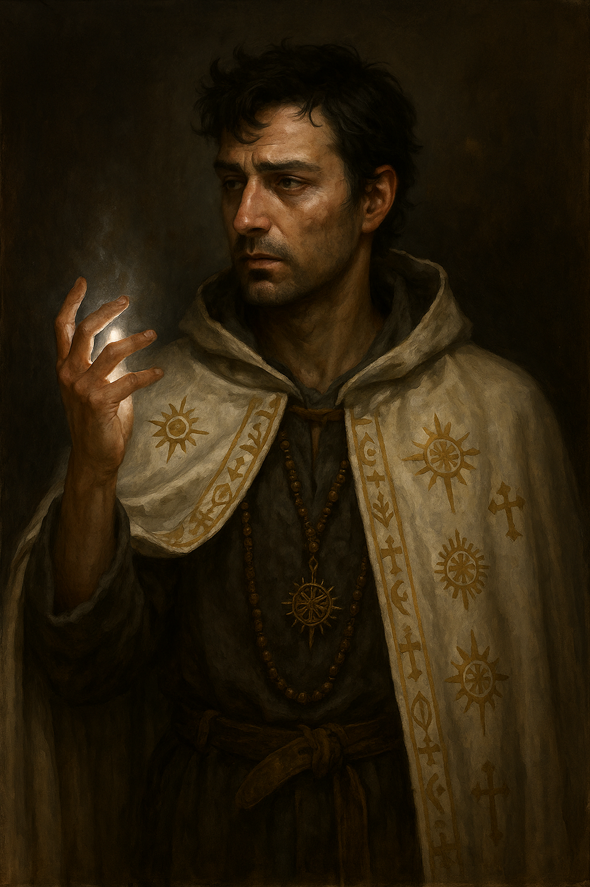

Aramis Rosarian

"Pretends to be a holy man, but every day he just feels more and more hollow…"
Character Overview
| Class & Level | Sorcerer (Aberrant Mind) 4 |
| Background | Acolyte (Milestone variant) |
| Race | Human |
| Alignment | Neutral |
| Role | False cleric, telepathic manipulator |
Aramis Rosarian wanders from town to town posing as a priest of the obscure Fellowship of the Radiant Solstice. But beneath the borrowed vestments and sun‑motif rosary lies a man whose aberrant powers once unmasked corruption in his order, and cost him everything. To this day he curses his naive belief in the righteousness of the world and of the faith, having tasted their "justice" first-hand. Even so, he poses as a man of the cloth and offers comfort and token healings, but his magic is subtle, defensive, and born of something disturbing and alien.
Personality
- Distrustful; he has scryed too many dark thoughts to believe in virtue.
- Helps the vulnerable, but only on his own guarded terms.
- Keeps his true sorcerous nature hidden behind clerical platitudes of piety.
- Secretly longs for a quiet life, a vineyard, and unconditional acceptance.
PDF Character Sheet
📄 Download full character sheet
Gameplay Notes
??? info "Playing Aramis effectively" - Not a real healer: Don’t rely on him for restorative magic. - Leverage deception: Use Disguise Self, Subtle Spell, and Telepathic Speech to steer scenes. - Plan the reveal: Coordinate with the DM for a dramatic unmasking of his false cleric identity.
??? danger "DM Guidance" - Make sure Aramis’s deception enriches party cohesion and doesn't derail it. - Introduce witch‑hunters, suspicious clergy, or villagers who notice inconsistencies. - Offer opportunities for growth: exposure, possibilities to use the aberrant abilities for good (or bad), or moral conflict that forces action.
Stat Snapshot
STR 8 (-1) DEX 12 (+1) CON 14 (+2)
INT 14 (+2) WIS 10 (+0) CHA 18 (+4)
HP 26 AC 12 Speed 30 ft.
Proficiency Bonus +2
Spell Save DC 14 Spell Attack +6
Metamagic: Subtle Spell, Seeking Spell • Sorcery Points: 4 • Psionic Spells: Arms of Hadar, Calm Emotions, Detect Thoughts, Misty Step, Mind Sliver
Spellcasting Highlights
Cantrips
Fire Bolt • Dancing Lights • Mending • Prestidigitation • Message • Word of Radiance • Guidance • Mind Sliver
1st‑Level (4 slots)
Mage Armor • Shield • Disguise Self • Hex • Thunderwave • Absorb Elements • Cure Wounds
2nd‑Level (3 slots)
Mirror Image • Misty Step • Hold Person • Calm Emotions • Detect Thoughts
Equipment & Magic Items
- Quarterstaff +1
- Cloak of Protection (attuned)
- Ring of Mind Shielding (attuned)
- Fake rosary (holy symbol), real arcane focus crystal hidden in his sleeve
Backstory (Short Form)
Fifteen years ago, novice Aramis discovered the abbot of his abbey embezzling alms. While his aberrant telepathy exposed the crime, he also outed himself. Branded a heretic, he fled and forged the clerical persona he still maintains. Each new town offers fresh coin and momentary refuge, but every night he drowns his guilt in wine and anonymity.
Hooks & Complications
- Witch‑hunters on his trail
- A dying child whose cure forces him to choose between secrecy and compassion
- An old friend who recognizes him beneath the cowl
Last updated: {{ date }}